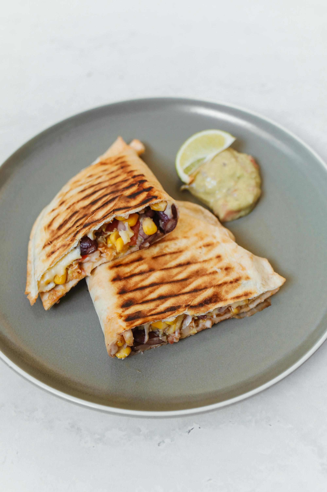
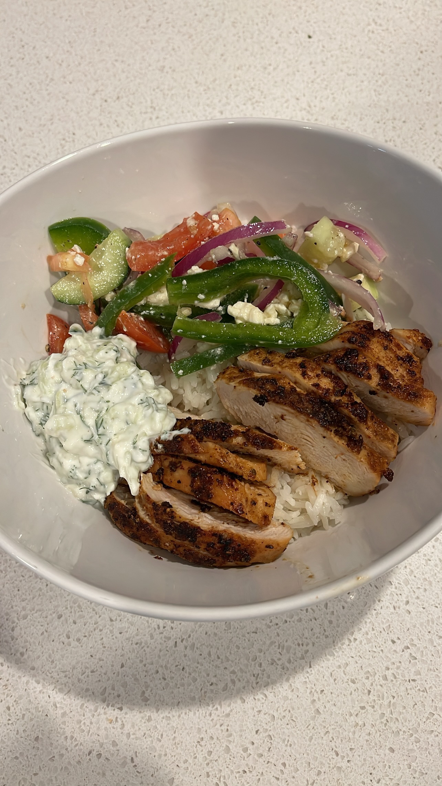

Quesadillas and Black Bean Corn Avocado Salad
Serves: 4-6
Quesadilla Ingredients
- 6 large burrito size tortillas. Support your local carneceria for freshest and tastiest tortillas if you can!
- 2 cups freshly shredded cheddar
- 1 cup freshly shredded monterey jack cheese
- 1 cup freshly shredded pepper jack cheese
- Add any cooked protein (chicken, black beans, steak, seafood) * optional
Black Bean Corn Avocado Salad Ingredients
- 1 can black beans
- 1 can corn
- 1/2 red onion, diced
- 1 red bell pepper, diced
- 1/2 cup cherry tomatoes, halved
- 1 ripe avocado
- 1/4 cup cilantro, chopped
- Salt and Pepper to Taste
- 1 lime, juiced
- 2 tbsp of olive oil
Quesadilla Instructions
- Shred your cheese: Freshly grated cheese tastes better and melts better! The extra effort is worth the boost in flavors
- Heat your pan: to medium heat, add your tortilla, add cheese to one half and folder over, once cheese begins to melt, flip. For larger quesadillas you can do sandwich style and add cheese all over the tortilla and place a second one on top.
- Serve immediately: Pour it up in a cute glass with a wide straw! Enjoy!
Bean and Corn Salad Instructions
Watch the video for instructions on how to make the Corn Black Bean Avocado Salad:

Mediterranean Chicken Bowls
Serves: 4
Ingredients:
- Base: 2 cups cooked rice (white, brown, or lemon), 2 cups shredded romaine or iceberg lettuce. Pro-tip: use a rotisserie chicken from the store or use leftover chicken from Shawarma night.
- Protein: 2 cups leftover grilled chicken (shawarma-style), sliced or chopped
- Salad Toppings: 1 cup cherry tomatoes (halved), 1 cucumber (diced), 1/4 red onion (thinly sliced), 1/4 cup kalamata olives (halved), 1/2 cup crumbled feta (optional)
- Sides: 1/2 cup hummus, pita chips or warm pita wedges
- Sauce: 1/2–3/4 cup leftover tzatziki sauce from the Chicken shawarma dinner
- Optional Add-ins: Pepperoncini, pickled red cabbage, fresh parsley or mint
Directions:
- Prep your base: In each bowl, layer 1/2 cup rice and 1/2 cup shredded lettuce as your base.
- Add the salad toppings: Divide the tomatoes, cucumber, red onion, and olives evenly among bowls. Sprinkle with feta if using.
- Top with protein: Add 1/2 cup of your chicken to each bowl, either cold or reheated.
- Add sauces and sides: Spoon a generous dollop of tzatziki on top, and a scoop of hummus on the side. Serve with pita chips.
- Finish it off: Optional: drizzle olive oil or squeeze lemon over top.
Tips:
Meal prep tip: Store ingredients separately and assemble when ready.